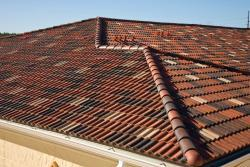

Roofing in Newark, OH
Keep the rain outside where it belongs. If raindrops are falling in your home or business, turn to Ever Ridge Roofing LLC for roof repair, installation, and replacement. Whether you have a shingle, tile, slate, or flat roof, you can depend on us as your roofing contractors in Newark, OH. We service many types of roofing systems. Make sure Mother Nature stays out of your living areas with a well-built roof.
Local Roofers Providing Thorough & Prompt Service
Finding the source of a roof leak is sometimes a complicated process. That’s because the specific problem area on your roof is rarely located directly above the leak. Because we are local roofers with years of experience in the industry, we are fully equipped to provide precise repairs so you enjoy a dry living area again. Turn to our team for residential roof repairs, as well as commercial roofing services.
Comprehensive Roofing Services
Perhaps you need more than roof repair. It may be that it’s time for roof replacement. Schedule a roof inspection, and we’ll determine if it needs repair or replacement. Depending on the type of roof you have, we may be able to rescue your roof by replacing small sections or repairing minor damages. However, if we need to replace your entire roof, we’ll provide a fair estimate and work with your budget by offering different options.
Contact us for a consultation if you need roof repair or installation. We serve customers throughout Newark, OH, and the surrounding areas.
Roof Installers in Newark, OH
Are you breaking ground on your first home? Are you in need of a new roof for your current home? Your roof is one of the most visible structures of your home and it provides protection from the elements. For these reasons, it’s important to have a roof that’s not just attractive, but also durable and sturdy. Rely on Ever Ridge Roofing LLC to install your roof with precision, accuracy, and quality.
The Area’s Premiere Roof Installers
As local roof installers in Newark, OH, we are committed to seeing our community flourish. We approach every project we take on with enthusiasm and the utmost professionalism. We make it a point to deliver outstanding results for each of our individual clients. Our roof installation contractors take the time to learn about what qualities you’re looking for in a roof. Whether you want a modern or traditional-looking roof, rely on us to capture the vision you have for your home.
Experienced Roofers at Your Side
Home projects are exciting, but they can also be stressful. Let our experienced roofers take care of all of the dirty work so that you can sit back and relax. Rely on our years of training and knowledge to ensure you and your home are protected. Your complete and total satisfaction is our highest priority.
Contact us to discuss your roofing project. We proudly serve clients in Newark, OH.
Roof Repair Service in Newark, OH
Your house is likely your biggest investment. Keeping the roof in good condition is key to preventing expensive and extensive structural damage. For capable assistance with roof repair and replacement service in Newark, OH, count on Ever Ridge Roofing LLC.
Let our experienced professionals assess the condition of your roof and let you know if repair or replacement is in order. Rest assured, it is our practice to extend the life of your roofing system with quality repairs. However, if that is not possible, we give you an honest answer. Ask us to provide you with details of the problem, as well as its solution.
Repairs to Extend the Life of Your Roof
You do not need to replace your roof if it is missing just a few shingles or tiles, or if there is a small tear or leak. These can be easily repaired so that your roof can continue to provide you with shelter from the elements. Repairs made as soon as you see a problem will likely be small and inexpensive, while repairs that are delayed could result in extensive damage and increased repair costs.
Replacement is necessary if your roof is nearing its age limit or if it has extensive structural damage that makes it unsafe. Depending on your type of roof, it could last anywhere from 20 to 100 years. If you have any questions about the lifespan of your roof, do not hesitate to call us out for an inspection.
Does Your Roof Need Repair or Replacement?
Contact us today to give you a professional assessment of the condition of your roofing system and whether repair or replacement is required. We proudly serve customers in Newark, OH.
Commercial Roofing Repairs in Newark, OH
Protect Your Business Operation with Roof Repair
Extend the working life of the roof over your business with expertise from Ever Ridge Roofing LLC. Our company provides quality products and workmanship to keep your roof in tip-top shape for many years. For service you can rely upon, turn to our licensed contractor for the commercial roofing repairs in Newark, OH, your business needs. We provide comprehensive service for the following types of roofing:
- Metal
- Flat
- Concrete
- Rubber
- Corrugated
- Torch Down
Timely Roofing Service Prevents Damage
It is essential for your company’s roof to be in excellent repair at all times. Otherwise, rain and even small animals could get inside and wreak havoc. Water could cause untold damage to the structural integrity of your place of business. Any cracks, tears, or holes would allow water to get inside the building and potentially ruin merchandise and machinery. If you allow your roof to deteriorate too much, it could even require an expensive replacement. Do not allow this to happen. Instead, call on our contractor for commercial roofing repair.
Request an Estimate for Repairs
Give us a call for an estimate. Our professionals look over your roof, noting the extent of repairs needed, and then give you an estimate of the costs and time involved for repairs. Feel confident that we offer you great value for your dollar and offer exceptional work. With our help, your roof is safe and sound for years to come. Reach out to us for much-needed repairs.
Contact us today to repair your roof before damage is done to your building and its contents. We proudly serve clients in Newark, OH.
Gutter Downspout Repair in Newark, OH
A worn-out or broken gutter or downspout is nothing to ignore. In fact, it can quickly become a big problem, leaving your home’s foundation, exterior, and landscaping vulnerable to serious water damage. At Ever Ridge Roofing LLC in Newark, OH, we provide expert gutter downspout repair services designed to restore the full function of your gutter system and protect your home from the devastating effects of rainwater.
Don't Neglect Those Gutters
Ever Ridge Roofing LLC understands the important role your home’s gutter system plays in preserving your home’s structural integrity and value. When rainwater isn’t effectively routed away from your home, it can pool around your foundation, compromising its integrity and causing serious damage to your landscaping. That’s why our team of gutter specialists provides prompt, professional gutter downspout repair service when you need it.
If your gutters or downspouts aren’t functioning properly, don’t subject your home to another rainy day. Contact Ever Ridge Roofing LLC today for a repair estimate and enjoy the protection of a fully functioning gutter system.
Gutter Downspouts Company in Newark, OH
A fully functioning gutter system protects your Newark, OH home’s foundation and exterior from the damaging effects of rainwater. And your gutter downspouts play a critical role in routing water away from your home and landscaping.
Don't Risk It
Improperly routed rainwater can be a bigger problem than you might think. As rainwater pools around your foundation, saturated soil can cause settling and cracking, which can negatively impact your house value and necessitate costly repairs throughout your home. A high-quality gutter and downspout system from Ever Ridge Roofing LLC can protect your Newark, OH home from rainwater damage while boosting its value and curb appeal.
Your Local Gutter Experts
At Ever Ridge Roofing LLC, we adhere to the very highest standards of quality and service, providing our customers with only the best products on the market. Our team is committed to your satisfaction, and we'll be happy to answer any questions you have about gutter downspouts and their importance.
Are old or worn-out gutters and downspouts putting your home at risk for water damage? Contact us today for an estimate and see what new gutters and downspouts can do for your home’s look and value.
Home Roof Replacement in Newark, OH
Is your roof nearing the end of its lifespan, but still in good enough shape that it doesn’t require a complete replacement? Re-roofing is an option that may be appropriate for your home. Instead of replacing your entire roof, a new set of shingles is layered on top of the existing shingles on your roof. It’s often a less expensive and faster route to fixing a roof. Rely on Ever Ridge Roofing LLC when you need expedient and reliable re-roofing service in Newark, OH.
Comprehensive Re-roofing Service
Your roof plays a crucial role in the protection of you, your family, and your valuables. As long as there is no major water damage or large amounts of mildew or moss, our contractors can complete the re-roofing process in a timely and efficient manner. We only use materials of the highest quality when working on your home to ensure its long-term protection.
Reputable Re-roofing Company
Work with a company that puts an emphasis on customer service. Each of our contractors is dedicated to seeing to your complete and total satisfaction. We treat you and your home with the utmost respect. When you hire us, you can expect us to arrive on time, use the time we work efficiently, and keep you informed of the progress made.
Contact us to schedule a consultation. We proudly serve clients in Newark, OH.
Home Roof Repairs in Newark, OH
Turn to our Roofers for Repairs You Can Trust
When you’re choosing a roofing company for your home, it’s crucial you go with a company that has the knowledge and experience to do the job right. Ever Ridge Roofing LLC is the trusted name in local roofing you can count on for proper installation, professional inspections, and effective repairs.
Our residential roofing company in Newark, OH, is dedicated to customer satisfaction and superior workmanship. Your roof is your home’s front line of defense against the elements. Let us ensure that it is performing at its best.
Are You Looking for a Residential Roof Repair Company?
Properly installed, a good quality roof should offer decades of home protection. You can trust our company to install or replace your roof correctly for maximum effectiveness.
However, routine inspections and repairs are also necessary for getting the most out of your roof. Storm damage, impact from falling tree limbs, and other factors may compromise your roof over time. Damage like this often leads to costly repairs if left untreated. Call us for prompt, lasting repairs when you notice signs of roof damage, such as:
- Leaks
- Blistering or Peeling Paint
- Indoor Water Stains
- Mold or Mildew Growth
- Missing or Loose Shingles
- Dark Patches on Roof
- Structural Decay
- Rising Energy Costs
Contact us for an estimate on residential roofing. We proudly serve customers in Newark, OH.
Roof Replacement in Newark, OH
Don’t repair your roof. Replace it! A well-built roof is not a luxury. It’s an absolute necessity. If it’s leaking or damaged, roof repairs may not be your best option. Instead of spending money on ongoing repairs, choose Ever Ridge Roofing LLC for roof replacement in Newark, OH. We install a roof that not only protects your building from Mother Nature, but enhances the look of your property as well. Simply choose the type of roof you want, and we’ll raise the roof on quality services.
Replace Your Roof the Affordable Way
Save money without compromising on quality. The bill for roofing work could go through the roof if you use amateurs or unknown contractors to do the job. In addition, you may end up paying more for repairs in the future due to inferior workmanship. As a well-respected roof replacement company, we know how to replace your roof the right way. We accurately estimate the costs and then provide efficient services.
Why You Need Roof Replacement
For leading solutions, premium products, and outstanding results, you can’t go wrong when you turn to us. Having years of experience in the industry, we are skilled roof installers that certainly know our way around rooftops. Reach out to us for a roof inspection today.
Contact us for a consultation if you need to replace the roof on your home or business. We serve customers throughout Newark, OH.
Roofing Removal in Newark, OH
Our professional and skilled roofing removal contractors in Newark, OH know there are different reasons why roof removal may be best for you. Sometimes a tear-off is mandated by your building code. Sometimes, upon inspection, we simply find that an existing roof has deteriorated to the point that it can no longer be repaired. At that point it’s best to have our experienced team help you decide the best course of action. We are always ready to answer questions and address your concerns, because keeping open lines of communication is one of our top priorities.
Skilled & Professional Roof Removal Contractors
 When you hire our roof removal contractors you can expect them to know how to assess your roof to ascertain which factors are present, if any, that recommend you for a full re-roof. Ever Ridge Roofing LLC is committed to providing the work you need at a price you can afford, so we never do more than necessary. However, for example, if there is extensive moisture below the membrane, or it cannot provide proper lift-up resistance or fire protection, you may need complete roof removal in order to properly maintain the best condition of your home or building. The presence of phenolic foam insulation may be cause for replacement as well. Contact us today for an inspection to determine your need for roof removal.
When you hire our roof removal contractors you can expect them to know how to assess your roof to ascertain which factors are present, if any, that recommend you for a full re-roof. Ever Ridge Roofing LLC is committed to providing the work you need at a price you can afford, so we never do more than necessary. However, for example, if there is extensive moisture below the membrane, or it cannot provide proper lift-up resistance or fire protection, you may need complete roof removal in order to properly maintain the best condition of your home or building. The presence of phenolic foam insulation may be cause for replacement as well. Contact us today for an inspection to determine your need for roof removal.
Contact us today to schedule a consultation in Newark, OH.
Your Go-To Roofer in Newark, OH
Roofs play a critical role for any building. Great-looking roofs can boost your property value and sturdy roofs protect your home or business from the elements. Get a roof that’s built to last for years to come. At Ever Ridge Roofing LLC, you can get the best of both worlds. Our Roofer works with precision so our customers in Newark, OH get structures that are both strong and beautiful.
Offering the Roofing Solutions You Need
Whether you need a couple of shingles repaired or more extensive work done on your roof, you can count on us. No matter what type of project you have in mind, we’ll work with an unwavering attention to detail. Reach out to our team today to schedule a consultation or a service visit.
Contact our Roofers to learn more about our services. We proudly serve property owners in Newark, OH and the surrounding communities.